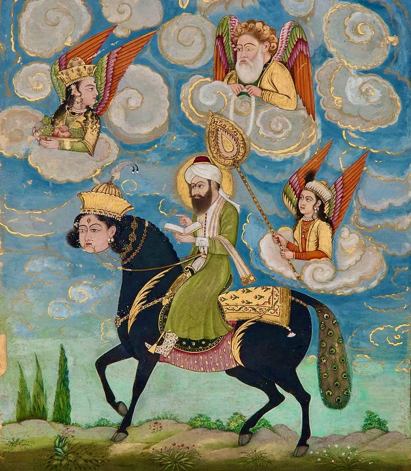

Dante domestico, Dante musulmano

Del perché Dante può ancora insegnare qualcosa a tutti.
1. Dante prima di noi
Dante, pare strano ma occorre ricordarlo, stabilisce le coordinate del dire poetico italiano e della sua lingua, segnando la propria preminenza nella cultura del Paese nonché nella sua memoria politica e sociale. La considerazione del suo operato è inevitabile per chiunque, in qualsiasi modo, abbia a che fare con la poesia o con l’Italia. Dante appare a noi domestico, lo chiamiamo sempre per nome e mai per cognome e rappresenta un patrimonio inalienabile delle nostre case. Non può nemmeno mancare nella considerazione dei media che fagocitano ogni cosa e che, in maniera ormai più pervasiva della scuola, ne permettono la diffusione, per quanto a volte soltanto nel nome - ma si sa, basta la parola, dicono… E così va a finire che Dante, insieme alla Costituzione e alla magistratura, rappresenta il feticcio più nominato e abusato dagli italiani.
Anche di fronte alla volgarità di tutto ciò, lo stesso Dante sarebbe rimasto particolarmente dispiaciuto che, in queste nostre stolte cronache, dei musulmani frequentanti le scuole medie, regolarmente residenti nel Paese, ne possano rifiutare lo studio o addirittura la considerazione, per quanto in definitiva nemmeno tanti professori gli rendano adeguato servizio. Eppure, c’è stata un’epoca non poi così remota in cui pubblicazioni popolari, tipo i ricchi opuscoli settimanali della Fabbri, permettevano a tutti, come se davvero fosse un diritto costituzionale, di approcciare e apprezzare la ricchezza culturale del poeta, certamente profondamente cristiana ma non solo, e particolarmente debitrice della cultura musulmana come del resto lo è, a partire dai numeri, tutto il nostro mondo. Tali questioni sono importanti per ognuno, nonostante l’ottusa chiusura che possano ancora dimostrare quelli che, in ogni schiera, fanno della chiusura in una presunta identità la tomba del pensiero.
Per uscire fuori da tali strettoie, che condizionano fortemente i nostri difficili tempi, occorre, come ammoniva Gombrovich, cercare un Dante che si sottragga alla convenzionalità letteraria e anche all’eccessiva confidenza, e farlo parlare attraverso il rapporto tra testi, epoche e culture. E quindi, come consigliava Montale, ritrovarlo proprio nella sua estraneità a noi, intento a parlare a questo nostro nuovo medioevo tecnologico e a questo nostro inferno di cui egli si diceva «certo» (Lo sai: debbo riperderti e non posso, 1934), e rispetto al quale abbiamo quantomeno il compito di decifrarne i caratteri.
2. Dante e la lingua
Cerchiamo quindi di entrare nell’opera e nella lingua di Dante e nel loro intreccio. La Commedia, chiamata “divina” soltanto da Boccaccio in poi, si staglia come un’immensa cattedrale culturale composta di materiali prefabbricati che maturano in una sintesi originale nel travaglio e nella concentrazione dell’esilio. Ratificando la legittimità dell’uso del volgare in letteratura, viene raccolta l’esperienza di un’epoca nella testimonianza di una concreta persona storica, che converge nell’unità e nell’universalità di una visione improntata alla fede. Dante, poeta propriamente “civile” nel vivere fino in fondo le tensioni del suo tempo, ampiamente glorificato tanto nel risorgimento quanto nel dopoguerra per permettere un’educazione diffusa e una cultura popolare nel segno dell’unità nazionale, rimane propriamente civile e in qualche modo nostro contemporaneo laddove la sua esperienza è quella di un’Italia, ora come allora, travagliata e spezzata, nella quale ogni identità, al di là di rivendicazioni sterili, può formularsi solo per intersezioni.
Ciò riguarda anche la questione della lingua, alla quale dedica in modo precipuo le acute riflessioni del De vulgari eloquentia. Il libro, destinato ai dotti, è scritto in latino, e descrive la genesi e la casistica delle diverse lingue parlate in Italia. Il volgare illustre, distinto da quello cardinale, regale e curiale, non è nessuna di queste, e va quindi dedotto per creazione retorica, combinando tra loro il volgare, vale a dire la lingua parlata «che si apprende dalla nutrice» (cap. I), mutevole con le condizioni di tempo e luogo, e la grammatica, ossia la lingua resa solida e duratura nel sottostare a regole decise da un élite. Esistono poi anche volgari indegni, da scartare per l’asprezza dei suoni: quello romano, quello di Umbri e affini, di Spoleto e della Marca d’Ancona, quelli di Milano, di Bergamo, del Friuli e particolarmente di Aquileia, dell’Istria, nonché di Genova, del Casentino, della Sardegna intera (I:12). Il Siciliano, nonostante i risultati raggiunti dalla corte di Federico II, comunque molto diversi da quelli della lingua parlata, «non merita assolutamente l’onore di essere preferito agli altri, perché non si può pronunciarlo senza una certa lentezza» (I:12).
Dante è lapidario, schietto ed esigente anche con i suoi pari, e siccome «il volgare che cerchiamo è altra cosa» fa fuori sorprendentemente anche i Toscani che, per quanto presentino delle eccellenze, sono più di tutti «intronati da quel loro turpiloquio» e, pur rivendicando priorità in preda ad un «delirio da ubriachi», sono semplicemente «rimbambiti dalla loro follia» (I:13). Così, risulta che sono i Bolognesi a parlare «la lingua più bella di tutte», dove «prendono dagli Imolesi il morbido e il molle, e invece dai Ferraresi a dai Modenesi una certa chioccia asprezza che è propria dei Lombardi», ottenendo così «una soavità degna di lode» (I:15). Tuttavia, Dante rileva pure che a San Felice e a Strada Maggiore parlano lingue diverse, a segno della «dimenticanza della prima lingua» (I:4-6), idea che ci spedisce direttamente alla cacciata dall’Eden. Ad ogni modo, anche il bolognese non è adatto ad essere lingua letteraria. Il volgare illustre non è quindi affatto, come crede una diffusa ed errata vulgata, la lingua del popolo, e addirittura si conviene soltanto a coloro che hanno «ingegno e sapere» (II:1).
Dante lasciò incompiuto il De vulgari, che rimase dimenticato fino a quando agli inizi del 1500 Gian Giorgio Trissino ne acquisì un manoscritto che circolava a Padova, e nel dibattito successivo venne addirittura contestato nei toni e nell’attribuzione, tanto per residui dell’enfasi umanista sulla classicità greca e latina, quanto per le difformità tra il testo e opere quali il Convivio e la Commedia. Infatti, le riflessioni del De vulgari danno predominanza al volgare e quelle del Convivio al latino, mentre la fitta analisi linguistica del De vulgari non lascia tracce evidenti nella Commedia, che utilizza come lingua il fiorentino del suo tempo, piuttosto aperto al siciliano letterario. Quanto resta costante è il proposito, che troverà particolare seguito in Manzoni, di legittimare l’uso del volgare per trattare temi nobili in contesto letterario e quindi per costruire una norma letteraria unitaria.
Nella Commedia, questa opera tanto diffusa negli arredi domestici eppure spesso nemmeno sfogliata, una struttura improntata alle fasi di perdizione, pentimento e salvazione intreccia i piani dell’umano e dell’eterno permettendo nel primo il tralucere dell’altro attraverso un’ampia escursione di stili. Lo sdoppiamento critico tra personaggio smarrito e narratore consapevole non risponde a quello «stento» criticato quale carattere di incertezza da Benedetto Croce, ma piuttosto è quanto permette una narrazione a più livelli. In questa vera e propria selva, rispetto al simbolo e all’allegoria, prevale quanto Eric Auerbach chiama «figurale»: le immagini non concentrano idealmente le qualità dominanti e non ne rappresentano astrattamente il significato nascosto, ma nemmeno escludono la dimensione reale: piuttosto, portano a corrispondenza figura e compimento, mantenendo concretezza storica.
Insomma, quella di Dante è una poesia che nasconde narrazioni, si correla ad un reale al quale fornisce significati, è basata su idee e trasmette idee, mutuate perlopiù dalla Scolastica e dalla cosmologia tolemaica. Le Sacre scritture sono segno di rivelazione e il reale è cifra del divino. I debiti nei confronti di Aristotele avvengono attraverso la mediazione di pensatori musulmani quali Averroè, il cui pensiero complica il rapporto tra universale e particolare nel concetto di intelletto agente, mente universale propria alla specie umana che in ogni uomo corrisponde a quanto opera per far passare gli intelligibili dell’intelletto passivo dalla potenza all’atto, e quindi principio ultimo e garanzia dell’universalità della conoscenza che operando in virtù dei caratteri di eternità, separatezza e unicità.
Tale concezione, la cui vasta e sotterranea influenza coinvolge in un pensiero del possibile figure come Bruno e Leibniz, nonché autori individuabili nelle correnti più o meno rubricate sotto i nomi di romanticismo, idealismo, contingentismo, decostruzionismo, introduce nel pensiero uno spiccato aspetto non-umano, che prescinde della singole individualità. Dante è tra quanti considerano che proprio questo, in quanto pensiero di Dio, è quanto ci rende compiutamente umani, così come l’esperienza storica è realmente tale laddove è vissuta sotto il segno dell’eterno. Dante approfondisce il senso del cristianesimo nel momento della sua crisi, mentre il progetto della Chiesa chiede di essere completato dal disegno dell’Impero, e attribuisce al Comune il compito di apportare fratellanza e permettere mediazione. E così, nel conflitto continuo di una Chiesa e di un Impero ormai prossimi al naufragio, laddove il nascente Comune ha già da tempo manifestato pulsioni distruttive, Dante cerca ancoraggio nelle prime due istituzioni fornendo loro teoria e legittimazione, e va a finire che conosce l’esilio ad opera della terza. E oggi, mentre da tempo la prima ha ineffabilmente dissolto le proprie forme in altro e la seconda ha sublimato la propria in una solenne caricatura di se stessa, la terza fa parte di quelle che, nonostante le palesi insufficienze, ancora decidono, imperano e pontificano.
Tutto ciò contribuisce a farci comprendere che il poeta più diffuso nelle nostre case sia stato e rimane, caso piuttosto atipico in una letteratura nazionale composta perlopiù da ruffiani, un outsider privo di scrupoli verso ogni comoda collocazione; analogamente, nell’inarrestabile inflazione di pensieri irrimediabilmente terra-terra e di pretese assolute e ineffabili, rimane tuttora viva l’esigenza di fornire spazio ad una mente universale capace di specificarsi in ogni pensiero.
3. Dante e Adamo
Lo smarrirsi di Dante nella selva della perdizione è teologico e politico, e trova nella poesia lo strumento della propria salvezza. Tale caduta è analoga a quella di Adamo, che con il Peccato originale perde l’Eden pur rimanendo armato di una lingua con cui opera la ricombinazione nei confronti di un mondo da cui è ormai separato. Adamo è l’Uomo Universale, conosciuto dalla Cabala ebraica con come Adam Kadmon, maschio e femmina insieme, unione di misericordia (Chesed) e rigore (Geburath) che, nel mondo successivo alla loro separazione e quindi alla caduta, tendono costantemente al ricongiungimento. Tale carattere di universalità viene ribadito e approfondito dal sufismo islamico con la nozione di al-Insān al-Kāmil, unità intrinseca di ogni creatura e prototipo divino di tutti gli esseri, Volto di Dio nelle creature, la cui conoscenza si rivela attraverso l’intuizione del cuore (al qalb). Se per l’Ebraismo la fuoriuscita di Adamo dal Paradiso apre il confronto con la storia che prepara l’avvento del Messia, per il Cristianesimo il suo peccato viene rimesso dalla venuta di Gesù di cui si attende il ritorno, mentre per l’Islam la serie dei profeti da lui inaugurata viene conclusa da Maometto lasciandoci comunque in attesa di un’apocalisse finale. Pur nella differenza con cui i tre diversi monoteismi si articolano, Adamo si situa da solo al principio della storia per poi fornire vita alla specie umana e ai suoi assortiti destini. Nel suo piccolo, Dante si colloca esattamente dalla parte opposta della creazione, alla deriva di un universo che cerca di riassumere nella sua opera poetica, partendo da un’iniziale solitudine per poi confrontarsi serratamente con persone di ogni tipo, e ne decide le sorti.
Ad ambedue, che parlano da una dimensione che non è esattamente quella dei viventi, viene in soccorso la profezia, la cui funzione rimane vacante dopo che le religioni rivelate hanno, in diversi modi, decretato chiusa la serie dei profeti. Ad ogni modo, tanto per Adamo quanto per Dante, si tratta di una profezia che guarda all’indietro, non verso il futuro ma verso il passato, e giunge a chiudere un’epoca. Il Midrash, l’esegesi biblica ebraica, ricorda che Adamo dopo aver perduto il Paradiso è costretto ad andare avanti a causa della tentazione subita da Eva nei confronti del potere; nella Commedia, a cause dei problemi determinati dai suoi rapporti con il potere, Dante si dirige di continuo verso un passato che arriva a coinvolgere lo stesso Adamo. Per ambedue, umanesimo è quanto viene dopo, e nel divenire estranei all’intero mondo di significati da loro stessi convenzionato, somigliano a noi, estranei anche a noi stessi. Particolarmente in questa epoca nella quale l’umanesimo è ormai alle nostre spalle.
Sulla soglia di un Eden in stato di abbandono avanzato, nel primo canto dell’Inferno, proemio a tutte e tre le parti della Commedia, «paura» è la parola che segna il maggior numero di ricorrenze (v. 6, 15, 19, 44, 53), e ad essa si contrappone e fa argine «pietà» (v. 21). Prima dell’incontro con le fiere del v. 38, la dimensione è propriamente infernale, eppure in essa è vivo uno slancio che, laddove tiene fermo il piede «più basso» (v. 30), riesce a mantenere il passo verso la luce che appare oltre il colle. La condizione umana è vissuta nei suoi aspetti più oscuri già secoli prima della stagione all’inferno di Rimbaud; molto prima di Heidegger e delle sue riflessioni sul pensiero poetante, l’oscurità viene preservata dal divenire tenebra dal tralucere della poesia.
E infatti, dopo la comparsa delle tre fiere, è un poeta ad apparire: Virgilio. Profeta di una religione ancora a venire, vate recalcitrante di un impero ai suoi albori, mago non per commercio con i demoni ma per potenza di pensiero, viene assunto quale guida esemplare di una ragione capace di ascendere alla fede. Una fede che, se evidenzia forte portata emotiva, è matematica nell’esattezza dei riferimenti. La nostra contemporanea compulsiva approssimazione, che distorce ogni cosa restando sempre e comunque chiusa in se stessa, rimane sulla soglia di tale complessità. E, per quanto voglia parlarne, non riesce a comprendere la sovversiva passione di rovesciamento dell’esistente dalla quale la Commedia è mossa.
Nel suo intinerario, Dante procede dalla selva e, girone per girone, arriva ad un giardino. In Purgatorio XXXII incontra dopo dieci anni Beatrice e si trova al cospetto proprio dell’albero della conoscenza che segnò la cacciata dal Paradiso: il ricongiumento degli amanti avviene lì dove si ruppe l’androginia del primo dei viventi. L’idea di albero si trova anche nel De Monarchia, dove il concetto di Lignum, talento che deve fruttificare, viene contrapposto a Vorago, l’abisso che rischia di inghiottire, seguendo un’alternativa che resta operante in ogni momento. La visione acceca gli occhi e complica la testimonianza, e qui diventa opportuno procedere per pochi cenni essenziali. La «pianta dispogliata/ di foglie» (v. 38-39) conserva il «seme dei giusti» (v. 48), e tuttavia si «innovò» (v. 58) in fiori variopinti grazie alla sua associazione con il carro. Significativamente, a Dante mancano le parole e, mentre si addormenta incapace di trascrivere quanto accade, le virtù di cui Beatrice si adorna si contrappongono al bestiario infernale, sette donne in processione mormorano in coro il nome di Adamo, nel cui nome si compie il ripristino dell’unità con Dio. In questo intrico di figure, Dante chiarisce che la storia della salvezza si compie grazie alla Chiesa che accoglie chi è «cive/ di quella Roma onde Cristo è Romano» (v. 101-102). Nonostante le polemiche personali, le controversie dottrinarie e le accuse di eresia, l’adesione al cattolicesimo romano, già evidente nell’impianto generale tomista, appare piuttosto netta: il punto è però comprendere quanto possa essere ampia la sua eredità, di fronte alla quale il mondo cattolico sembra immerso in un sonno più sodo di quello di Dante.
Dante quindi si sveglia e Beatrice gli ricorda che presto saranno insieme cittadini del Paradiso: la promessa d’amore si intreccia alla certezza della morte, riconfermando la vita individuale più intima e compiendo nei rapporti umani il senso della Parusia. La Seconda venuta di Cristo, pur se quelli che si dicono cristiani non lo sanno più, resta ad attendere alla fine dei tempi tanto loro, quanto i musulmani; se è proprio sulla natura di Cristo che avranno da discutere, a complicare il quadro c’è anche la venuta del Messia degli Ebrei, per il cui ruolo a suo tempo la candidatura di Gesù venne, come qualcuno dovrebbe ricordare, rifiutata. Mentre tali questioni da sempre imminenti restano aperte, manteniamoci sul percorso di Dante e riprendiamo il discorso su Adamo.
In Paradiso XXVI la pietà riscatta anche il primo uomo, e a segno della carità divina viene reintegrato assieme ad Eva nella redenzione cristica; eppure, Adamo, che nel Paradiso trascorse solo sette ore, per restare 930 anni sulla Terra e 4302 nel Limbo, testimonia che al tempo della costruzione della torre di Babele «la lingua ch’io parlai fu tutta spenta» (v. 126), così come aveva ricordato già il De vulgari. Sappiamo quindi che lingue si disperdono, differenziandosi secondo la tripartizione di Europa settentrionale, Europa dell’Est, Europa meridionale, ognuna caratterizzata da forme affermative diverse (iò, es, oc-oil-sì). La perdita della lingua primordiale porta inoltre a riconoscere, in un convenzionalismo epistemologico ante-litteram, come nessuna scienza, nella propria caducità, possa dimostrare o provare il proprio oggetto, che essa assume o al massimo «suppone» (Convivio, II-XIII:3).
Può così comprendersi come nella Commedia i contenuti del De Vulgari vengano estremizzati a partire dal loro vertice, che è anche il punto in cui il progetto del libro si arresta: non è insolito che un autore interrompa la stesura di un’opera quando questa non riesce più a corrispondere ai suoi intenti. Ad ogni modo, le sollecitazioni alla base dello scrivere continuano ad agire sotterraneamente: il De Vulgari segnala che nella Genesi la prima parola pronunciata da Adamo sia stata El, e cioè Dio, o quantomeno uno dei suoi nomi, proprio in risposta ad una domanda del creatore, laddove invece la prima vera parlante è stata Eva nel reagire alle tentazioni del serpente (De Vulgari IV); invece, nella Commedia, con un moto opposto, certamente memore del ruolo redentore di Maria, è l’ascolto delle parole di Beatrice a portare Dante alla conoscenza del vero.
Può così evidenziarsi l’aspetto ad un tempo di separatezza e unione proprio al linguaggio. Il dare nome alle cose, che è quanto accade nel Secondo capitolo della Genesi segnando la prima frattura dell’unità divina, significa distinguerle e opporle a sé in un modo che tuttavia prelude al possibile incontro con la loro essenza. Ciò allude ad una riflessione sulla parola il cui aspetto propriamente erotico verrà colto nelle riflessioni del teologo anarco-cattolico von Baader, e il cui studio della loro reciproca disarticolazione con le cose impegnerà in tempi a noi più prossimi la riflessione di Foucault. Su un altro registro, il riconoscere il carattere storico delle lingue è visto da Gianfranco Contini come il porsi della necessità istituzionale della poesia quale spazio di conservazione di una lingua destinata comunque a consunzione. Tutto sembra destinato all’entropia che domina incontrastata alla fine del tempo. Ma questo è davvero un destino assoluto, e lo è anche per ogni lingua?
4. Dante e Maometto
La cultura occidentale ha quindi compreso che la parola può condurci all’anima delle cose proprio perché c’è uno spazio tra parole e cose che rende possibile l’incontro, e la letteratura trova un carattere di eternità perlopiù in questa capacità di salvare quanto è più caduco. L’Islam, la cui profonda decostruzione delle medesime matrici giudaico-cristiane lo configura come occidente parallelo, non conosce tali problematiche e muove secondo altre prospettive. Adamo è, come in seguito Gesù, creato direttamente da Dio, ma non è espressamente nominato quale primo uomo e nemmeno viene inserito nei sei giorni della creazione; sopratutto, non è conosciuto il Peccato originale, in quanto le stesse parole delle creazione vengono a lui suggerite da Dio (Corano II:33), così come il suo pentimento dall’inganno diabolico è da Dio accolto senza residui (Corano II:37; XX:90).
L’Islam mantiene così al linguaggio un aspetto essenzialista e supernaturale, condividendo con l’ebraismo un carattere di sacralità connaturato allo stesso alfabeto; tale valenza però non è andata perduta e nemmeno conosce flessioni, dato il legame che inevitabilmente intrattiene con il Corano, copia di un archetipo celeste e consunstanziale a Dio, i quale ne ha consegnate le parole a Maometto. Insomma, nell’Islam, in modi strutturali, la parola è definitivamente creatrice e istituisce quanto rimane, e l’idea di libro sviluppa con piena solennità quanto è implicato nelle altre religioni basate su un testo. Testi che, nella prospettiva dell’Islam, l’ultimo arrivato, possono considerarsi alla stregua di bozze compromesse da un editing invasivo. Laddove si introduce il concetto di Madre del Libro e quindi il suo insindacabile potere di redazione (Corano 13:39), si apre per tale Libro l’enorme questione tra il suo carattere di creato (mutaziliti) e quello di coeterno a Dio (ashariti), con tutte le conseguenze che ne derivano nella distinzione dal cristianesimo nonché rispetto al ruolo che assume la ragione umana. Possiamo qui mantenere aperta la questione, riconoscendo con Derrida un supplemento di origine: non sussiste un’originario e tutto ciò che esiste guarda oltre se stesso. Ogni testo vive di vita propria e procede sempre più in là, garantendosi così la propria leggibilità.
Quanto possiamo osservare sono quindi i rimandi reciproci tra testi, senza pretendere che questo risolva tutto. I contraccolpi della civiltà islamica su quella cristiana sono stati evidenziati in maniera esemplare da Pirenne, che argutamente nota che senza Maometto e le conquiste favorite della sua predicazione non ci sarebbe stato Carlo Magno e la ripresa del progetto imperiale in occidente; le fascinazioni esercitate da una cultura sull’altra hanno una storia inevitabilmente ancora più lunga, anche laddove ognuna di esse rappresenta, come ha espresso in maniera esemplare Spengler, una sorta di organismo autonomo. Ad ogni modo, per quanto si mantengano distinzioni cruciali, alla base di diversi orientamenti di civiltà, sussistono e sono individuabili nell’opera di Dante elementi che sopravanzano il tributo riconosciuto a figure come i filosofi Averroè e Avicenna e il condottiero Saladino, peraltro rubricati in modo non indecoroso in un Limbo (Inferno IV) la cui istituzione oggi sembra essere caduta in disuso, permettendo altresì di relativizzare la presenza all’Inferno di Maometto e Alì.
Per rinvenire tali elementi, proseguiamo con Dante oltre la caducità di questo mondo: del resto, religione e poesia a questo servono. Al centro della sua cosmologia, al di sopra dell’Inferno che è ancora più in basso della selva oscura, c’è Gerusalemme; la Città santa è luogo anche di un altro viaggio, quello compiuto da Maometto nella sua ascensione (Mirāj) verso Dio (Corano XVII:I; LIII:1-12; LXXXI:19-25). Tale viaggio avviene sul dorso del Burāq, un destriero mistico proveniente dal paradiso capace di spostamenti rapidissimi, al quale nel tempo una suntuosa produzione iconografica che travalica i divieti di rappresentazione attribuisce un corpo tra l’asino e il mulo, volto di donna e coda di pavone. Dato a sua volta significativo, ne esiste un analogo dantesco nel Gerione (Inferno XVI-XVII; Purgatorio XXVII), che porta a spasso Dante e Virgilio, provvisto di volto umano, zampe leonine, corpo di serpe, coda di scorpione e ali da pipistrello, di chiara ispirazione apocalittica. Se nessuno ha mai incontrato il Gerione e anzi pochi lo ricordano, la tradizione islamica ha stabilito dopo un’iniziale perplessità che il Burāq esista davvero e il viaggio notturno di Maometto sia un fatto e non una visione.
Queste bestiole possono sembrare strane nella loro stessa conformazione, ma la cosa più strana e certamente vera è che, e tanto la storia quanto il presente lo dimostrano, le Gerusalemme ebraica, cristiana e musulmana non sono sovrapponibili né nell’immaginazione né nella realtà. A impedire un rapporto possibile non è però la presenza di Maometto nella Nona Bolgia dell’Ottavo Cerchio dell’Inferno, rappresentata anche nell’affresco di Giovanni da Modena nella Basilica di San Petronio a Bologna, che da parte sua indica un rapporto problematico del profeta dell’Islam con il Cristianesimo, ma niente affatto una loro reciproca estraneità, per la quale sarebbe stato più conseguente ignorarsi e basta.
Infatti, il peccato che sulla scorta di una lunga tradizione teologica Dante ascrive a Maometto è quello di eretico e seminatore di discordia, avendo di fatto egli provocato con la sua predicazione una divisione nella cristianità nei territori ai tempi contesi tra Bizantini e Persiani. Le eresie cristiane, impegnate sopratutto ad elaborare il rapporto tra divinità e umanità di Cristo in maniera difforme dall’ortodossia, sono del resto, insieme sopratutto all’ebraismo della diaspora, ad alcuni elementi dello zoroastrismo e al paganesimo arabo, tra gli elementi che hanno storicamente influenzato il formarsi dell’Islam. E infatti, presso l’Islam, il profeta Gesù non è figlio di Dio e non è morto e risorto, pur mantenendo il ruolo di messia. E così, nella tipica perfezione geometrica di colpe e punizioni che prende il nome di contrappasso e di cui lo stesso Libro della Scala offre vasto campionario, e con un incedere particolarmente volgare, Maometto viene da un diavolo armato di spada eternamente «rotto dal mento infin dove si trulla» (Inferno XXVIII: 24) e quindi fino all’ano, con gli intestini esposti senza troppe perifrasi laddove «’l tristo sacco/ che merda fa di quel che si trangugia» (v. 26-27), mentre suo genero Alì, che a dir del poeta prosegue l’opera di discordia con la divisione sciita, viene coerentemente sfregiato in viso in modo da completare il taglio, «fesso nel volto da mento al ciuffetto.» (v. 33).
Le pene scelte sono particolarmente gravose e possono risultare inaccettabili ad un musulmano incapace di comprendere ragioni altre, ma va definitivamente ricordato che lo stesso Averroè nel Trattato decisivo (1179) riconosce la diversità di piani del sapere e quindi delle forme culturali, e soprattutto riconosce che allo studioso, e un poeta come Dante è sopratutto uno studioso e un pensatore di prim’ordine, è permesso sbagliare. Peraltro, allo stesso Dante sono state variatamente attribuite posizioni eretiche. Ad ogni modo Dio, laddove lo si prenda davvero sul serio, è irriducibile a qualsiasi troppo umana attribuzione, nonché alle stesse divisioni da lui stabilite tra generi, popoli, culture e fedi proprio perché possano imparare reciprocamente (Corano XLIX:13).
Vanno quindi considerati ulteriori rapporti, molto più decisivi. Infatti, laddove Dante scrive la Commedia e stila il suo programma di rigenerazione morale nell’immaginare una Gerusalemme ideale aderente ai luoghi della Passione di Cristo, Maometto raggiunge la Gerusalemme celeste e, conformemente al suo ruolo di riportare al mondo la luce della creazione, dalla Cupola della Roccia, luogo di creazione di Adamo, ascende a Dio. Per quanto eventi che hanno rilevanza religiosa non sempre trovano riscontro storico, i testi che li espongono esigono approfondimenti sulla loro storicità, permettendo così di stabilire relazioni che travalicano gli ambiti dottrinari e che si sottraggono tanto ai veti degli integralismi religiosi quanto a quelli dei riduzionismi scientifici, parimenti lontani dal rigore e dell’apertura necessarie ad assicurare decenza al lavoro culturale.
Le reciproche influenze tra le civiltà nate dalle diverse religioni possono corrispondere a trasmissioni dirette oppure a forme mentis analoghe. Tra questi rapporti, che coinvolgono i toni nonché gli aspetti topografici e concettuali del mondo sovrasensibile, Miguel Asìn Palacios in La escatologia musulmana en la Divina Comedia (1919) evidenzia quelli riscontrabili tra l’opera del poeta fiorentino e l’ascensione nei Sette Cieli così come sviluppata in direzione allegorico-mistica da Ibn Arabi e letterario-satirica da al Maarri. Il tema dell’ascensione ha come suo luogo elettivo il Il libro della scala, o meglio nel più conosciuto tra questi, che per quanto smarrito in lingua originale era disponibile in una traduzione castigliana già nel XII sec. È plausibile che esso fosse noto a Brunetto Latini, maestro di Dante e per un periodo diplomatico in Spagna, e che come i libri dell’andaluso Averroè e dei suoi discepoli latini fosse ampiamente conosciuto nell’ambiente colto delle corti italiane che il poeta frequentò nel suo fertile esilio. Ulteriori somiglianze con l’opera di Dante sono riscontrabili nel Libro dei Re del poeta persiano Firdusi, anche lui rinnovatore della lingua e a sua volta condannato all’esilio per sospetta eresia e conflitti con il potere.
Per quanto i materiali prefabbricati che compongono la Commedia possano comprendere preesistenze di un certo rilievo, non vuol dire che esso sia un testo di risulta. Del resto anche l’ascensione di Maometto, come segnalato da Ioan Cuolianu, trova antecedenti nell’apocalittica ebraica (Enoc 2; 3 Baruch). Enrico Cerulli suppone quindi che non necessariamente Dante avesse impiegato tale testo come fonte diretta, e suggerisce che natura dei rapporti possa ricordare, più che la cattedrale di Cordova che originariamente fu moschea, quella di Pisa che incastona in sé una colonna andalusa. Nel rapporto tra testi, Carlo Saccone evidenzia come tanto la Commedia quanto il Libro della scala testimonino di un luogo immateriale costituito di luce, la cui percezione porta ad offuscamenti della vista che preludono ad un suo rafforzarsi; ambedue i testi, attraversando supplizi e dilettazioni, concordano nell’incapacità di descrivere questa luce, ricordando perlopiù un senso di sospensione. L’aspetto decisivo è che in ambedue le esperienze l’uomo non è al centro, ma è quanto consente il disvelarsi e si fa custode deI tralucere di un Essere che, con le parole di Heidegger, è irrimediabilmente altro da ciò che è semplicemente presente. Maometto, accompagnato dall’arcangelo Gabriele, ascende a questa luce per volere di Dio stabilendo in continuità con la successione profetica nuove leggi per una nuova comunità. Dante si intrattiene con una galleria di personaggi fortemente caratterizzati, per accogliere una luce che gli si rivela con un’impronta sperimentale e personale in modi non troppo diversi da quanto accade in un viaggio lisergico.
Così, possiamo ritrovarci a riflettere sul fatto che Dante abbia presso il mondo cristiano un ruolo analogo a quello che nell’Islam, seppur in chiave maggiore, rispetto a Cristo assume Maometto, considerato nella lettura musulmana dei testi cristiani il Periclytòs, il Consolatore chiamato a completare l’operato di Gesù (Giovanni XVI:12-13), e quindi assegnatario del ruolo che nella cristianità assume lo Spirito Santo. Presso l’Islam il Periclytòs agisce rigorosamente fuori dalla Trinità, considerata quale forma di associazione non pertinente all’unicità e unità divina, e Maometto rappresenta l’attuazione di tale messaggio. Invece, nella maggior parte dei cristianesimi, lo Spirito Santo costituisce la terza persona di una relazione inscindibile, che si effonde in carismi nei quali sono compresi l’annuncio della salvezza, dalla quale non può certamente esimiersi il riconoscimento della perdizione, nonche l’esercizio della profezia, che quindi riceve un nuovo ruolo rispetto a quello ormai concluso di annuncio della parola rivelata. Difficile negare che Dante sia stato particolarmente ispirato da tali carismi e quindi dallo Spirito Santo lo abbia ispirato in maniera particolare, laddove perdizione e salvezza trovano piena consapevolezza, mentre la profezia sembra compiersi, in affinità con l’idea coranica di testo archetipico, in una parola che nella sua capacità di durare fornisce veridicità al mondo.
Cerchiamo di sviluppare tali rapporti, la cui comprensione è tanto più urgente quanto più le loro ragioni apparentemente tendono a negarsi l’un l’altra, disconoscendo proprio quanto più profondamente le lega. Nei testi cristiani, il peccato verso lo Spirito Santo, definito dalla Summa Theologiae (1265-74) di San Tommaso quale infedeltà accompagnata dall’avversione alla volontà divina, è considerato come quello che non si può perdonare (Marco III:28-29; Matteo XII:31-32; Luca XII:10). Considerando ciò, risultano meno imperdonabili i musulmani che reputano inconcepibile oltraggiare Maometto e considerano la bestemmia linguisticamente impossibile, piuttosto che i cristiani per i quali non è insolito fare allegramente a gara di imprecazioni verso quanto può essere sacro pure per le religioni altrui. E da parte sua, un musulmano potrebbe trovare rivelazioni anche in Dante, sempre ammesso che un sin troppo diffuso fanatismo non lo abbia reso incapace di contare nemmeno fino a quel tre che gli ricorda troppo l’aborrita trinità cristiana. Ad ogni modo, in termini semplici e laici, si tratta di accogliere quell’azione che consiste nel saper tornare su se stessi e mettere in pratica quanto l’esperienza possa aver insegnato. Ma se tutto si può perdonare tranne un costitutivo rifiuto di consapevolezza, è disgraziatamente proprio ciò ad essere sin troppo tipico presso i cosiddetti umani tutti.
5. Dante dopo Dante
L’esperienza di Dante resta sospesa sulla letteratura italiana per diffondersi in ogni aspetto della vita culturale del Paese, la sua impronta si sedimenta tanto nella lingua nazionale quanto in quella dei poeti. Ancora oggi la sua opera risulta leggibile e capace di leggere il reale, e ciò anche per una particolare stabilità della lingua italiana, che si costituisce non come lingua popolare ma lingua colta, laddove invece in originale risultano pressocché incomprensibili i Chanterbury Tales con cui Goeffrey Chaucer chiude il secolo che a livello letterario inizia con la Commedia. E, indipendentemente se la leggiamo o meno, la Commedia continua a leggere in noi e ci ricorda come la nostra vicenda sia intrisecamente religiosa, senza troppi riguardi verso una nostra eventuale confessione.
Quanto differenzia Dante da Maometto, nonché da altri trattatisti religiosi quali Ezechiele, San Giovanni e San Paolo, è il suo porsi su un piano poetico che non è propriamente reale nel senso inteso dai testi sacri, e quindi nel riportare un’esperienza che, per quanto rigorosamente oggettiva e carica di universalità, è fortemente personale e si esprime in un contesto dove la frattura dell’unità di fede e politica è già avvenuta. Per tale motivo, come ci ricorda Der Untergang des Abenlandes (1924) di Spengler, Dante apre una fase di civilizzazione segnata dal ruolo della soggettività e dal dominio sull’infinito, detta faustiana; tuttavia, nella sua opera possiamo individuare l’azione di idee che appartengono ad una civiltà criptica caratterizzata dal racchiudimento in una luce intima di carattere oggettivo e in un’idea di «lettura» per la quale, come accade in modo esemplare nel Corano, a manifestarsi è una «Divinità concepita come parola». E se, come è proprio in senso eminente al testo dell’ultima religione rivelata, a nessuno verrebbe in mente di modificare una singola parola di quella che chiamiamo Divina Commedia, non è poi così forzato considerare che tutta la poesia che segue ne è, in modo affine a come Spengler individua nei commentari ai testi sacri, in qualche modo un’intepretazione.
Ritroviamo così Dante in Montale, che fa tornare il «lago del cuor» (Inferno I:30) dove lega la sua parte più interna, quella dove abitano gli spiriti vitali, al dissolversi delle cose destinate all’entropia: «Ed ora sono spariti i circoli d’ansia/ che discorrevano il lago del cuore/ e quel friggere vasto della materia/ che discolora e muore.» (Tramontana, 1925). Montale rimarca la nostra estraneità rispetto a Dante, che considera quale il massimo esempio di oggettivismo e razionalismo poetico, lì dove invece la nostra epoca non crede nelle “idee”, per quanto possano essere solide, ma nei “fatti”, per quanto siano inconsistenti, scontando l’irrazionalità di tale soggettivismo esasperato rendendo incomprensibili i fatti su cui si appunta e inafferabile ogni idea che si ostina a negare. Eppure, è proprio l’estraneità l’elemento che assimila Dante a noi.
Da parte sua, Giuseppe Ungaretti recupera l’immagine del naufrago seppur gli rende allegria, laddove «E subito riprende/ il viaggio/ come/ dopo il naufragio/ un superstite/ lupo di mare.» (Allegria di naufragi, 1917). E, come novello Ulisse, non fatto «per viver come bruti» (Inferno XXVI:119), segnala in che modo l’illuminazione poetica diventi percepibile proprio là dove inizia l’esperienza del dramma umano, che viene quindi capovolto in “commedia” grazie ad una speranza che sempre tende all’altezza, capace di guardare verso il Sole, guida di questo perduto universo, «in alto» (Inferno I:30). Quanto cambia, in un mondo che profondamente diverso da quello di Dante e inoltre successivo al tramonto dell’occidente, è il rapporto con una verità che non è più quanto corrisponde ai nostri contenuti, ma piuttosto si configura come costantemente altro da noi.
Non sono pertanto esperienze presunte o personalismi forzati, ma «foreste di simboli» che tendono ad una «tenebrosa unità» quanto, nella drammatica commedia del mondo moderno, possono permettere l’esperienza di un reale colmo d’ignoto e la possibile risalita alla luce. E così, in maniera forse inaspettata, rigorosamente fuori dai confini nazionali e linguistici, è Baudelaire, segnato dalla «perdita d’aureola» (1869) e quindi da uno sentire analogo a quello per cui la «diritta via era smarrita» (Inferno I:3), colui che persegue con maggiore appropriatezza di argomenti, toni e lessico, l’esplorazione del finito inaugurata da Dante, cogliendo nel «trasporto della mente» l’infinità insita nelle cose e le Correspondances (1857) che tra di esse intrattengono nel loro svanire ai sensi. La lontananza da Dante sembra abissale, ma è proprio il concetto di lontananza a imporsi su quello di altezza così come l’infinito cede spazio all’impersonalità, mentre è esattamente l’abisso a interessare un cammino che resta comunque lo stesso in ambedue. E medesimo è l’intento del loro gesto poetico, quello di ogni gesto che davvero vale qualcosa, esposti a quella contingenza estrema che è estrema possibilità di fioritura. E «l’acqua perigliosa e guata» (Inferno I:24) rimane tuttora a separare l’esperienza viva della poesia da quanto si limita a rincorrere una “poesia”, parafrasando Montale, forzosamente vissuta e autobiografica, eppure falsa. Così come, indipendentemente da ogni osservanza possa venir professata, rimane falsa una “religione” che, chiusa nel suo ottuso fanatismo, è incapace di riconoscere sé nell’altro da sé.
